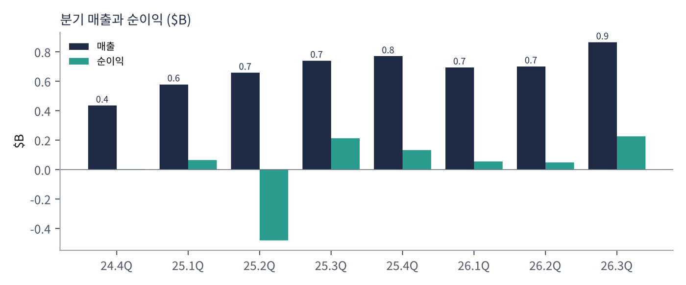
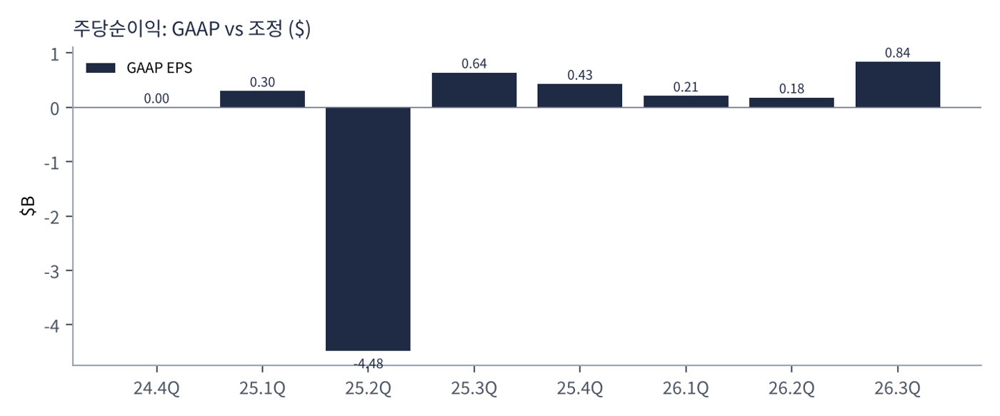
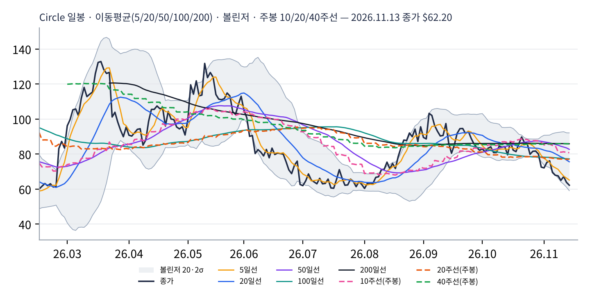
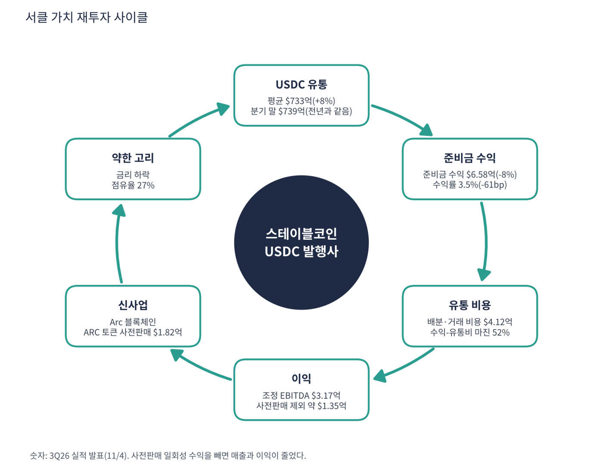

서클은 달러 연동 스테이블코인 USDC를 발행하는 회사다. 고객이 맡긴 달러로 미국 국채 등 준비금을 굴려 이자(준비금 수익)를 벌고, 거래소·파트너에 일부를 나눠 준다. 3분기 매출은 $8.65억(+17%)이지만 $1.82억은 ARC 토큰 사전판매라는 일회성 수익이고, 이를 빼면 매출이 -8%, 준비금 수익은 -8%인 회사다. 2025년 6월 상장했다.
| 항목 | 내용 |
|---|---|
| 종목 | Circle Internet Group, Inc. (CRCL) · NYSE · 스테이블코인 발행·결제 · 본사 미국 뉴욕 |
| 밸류에이션 | PER 34.9배(스캐너 GAAP TTM), 37.5배(Reported 기준) · P/S 5.6배(스캐너) (11/13 종가 $62.20) |
| 최근 분기(3Q26) | 총매출·준비금 수익 $8.65억(+17%), 계속 사업 순이익 $2.26억(+5%), EPS $0.84(전년 $0.64) |
| 매출 구성 | 준비금 수익 $6.58억(-8%), 기타 매출 $2.07억(이 중 ARC 사전판매 $1.82억) |
| 핵심 지표 | USDC 평균 유통 $733억(+8%), 분기 말 $739억(전년과 같음), 준비금 수익률 3.5%(-61bp), 시장 점유율 27%, 온체인 거래량 $13.9조(+49%) |
| 이익 지표 | 유통 비용 차감 매출(RLDC) $4.53억(+55%, 마진 52%), 조정 EBITDA $3.17억(+85%), 운영비 $2.45억(+16%) |
| 현금·부채 | 현금 등 약 $17억(스캐너, 준비금 제외 여부 미확인), 차입금 0, 3분기 누적 영업현금 $5.23억(전년 $2.93억) |
| 가이던스 | 2026 기타 매출 $3.10~3.30억 유지(사전판매 포함) |
| 다음 실적 | 4Q26 실적: 2027년 3월 3일 예정(트레이딩뷰) |
| 직책 | 인물 | 역할·특징 |
|---|---|---|
| 공동창업자·CEO | 제러미 앨레어 | USDC와 자체 블록체인 Arc를 중심으로 결제 인프라 확대를 주도(이번 자료에서 발언은 확인하지 못함) |
경영 스타일: '준비금 이자에 의존하는 구조를 결제·블록체인 수익으로 넓힌다'. 3Q에 Arc 블록체인용 ARC 토큰을 사전판매해 총 $2.42억어치를 팔기로 했고(토큰당 $0.30, 완전 희석 가치 $30억), 이 중 $1.82억을 3Q 매출로 잡았다.
달러 준비금을 보유하며 USDC를 발행·상환하고, 결제·거래용 자체 블록체인 Arc를 키운다.
스테이블코인을 기업·금융기관 결제망으로 키우려 한다. USDC 온체인 거래량이 +49%로 늘었지만 유통 잔액 증가는 +8%에 그친다.
다음 실적발표는 세 가지 질문에 답하는 자리다.
1. 준비금 수익이 이번 분기에 개선되나?
2. 악재 '금리 하락' 부담이 줄어드나?
3. 악재 '일회성 이익' 부담이 줄어드나?
한 줄 판정 규칙: 첫 질문의 준비금 수익이 좋아지면 약한 고리가 풀리고, 그렇지 않으면 현재 사이클의 약점이 그대로 남는다.
일정: 다음 발표일은 확인 필요(이번 분기 발표 후 일정 미확정). 위 현재값은 이 보고서의 기존 숫자다.
| 분기 | 매출 | 순이익 | EPS | 조정 EPS | 특이 사항 |
|---|---|---|---|---|---|
| 2024.4Q | $4.3억 | $0.0억 | – | – | |
| 2025.1Q | $5.8억 | $0.7억 | 0.30 | – | |
| 2025.2Q | $6.6억 | $-4.8억 | -4.48 | – | 상장 분기, 순손실(세부 원인 미확인) |
| 2025.3Q | $7.4억 | $2.1억 | 0.64 | – | |
| 2025.4Q | $7.7억 | $1.3억 | 0.43 | – | |
| 2026.1Q | $6.9억 | $0.6억 | 0.21 | – | |
| 2026.2Q | $7.0억 | $0.5억 | 0.18 | – | |
| 2026.3Q | $8.7억 | $2.3억 | 0.84 | – | ARC 토큰 사전판매 $1.82억 포함 |


EPS는 트레이딩뷰 'Reported' 값이다(스캐너 GAAP 이력은 2025년 일부 분기에서 값이 달라 쓰지 않았고 원인은 미확인). 서클은 조정 EPS를 발표하지 않아 조정 EPS 열은 '–'이다. 4Q24는 상장 전이라 EPS를 '–'로 두었다. 매출은 스캐너 값이며 총매출·준비금 수익과 일치한다.
흐름 요약: 분기 매출은 $4.4억(4Q24)에서 $7~8.7억으로 늘었다. 1Q26~2Q26에는 $7억 안팎으로 정체했고 3Q26에 사전판매가 더해져 $8.65억이다. 순이익은 2Q25 상장 분기 -$4.8억을 빼면 $0.5~2.3억 범위다. 영업이익과 분기 설비투자의 8분기 값은 구하지 못해 표에서 뺐다.
| 구분 | 3Q26 | 전년 3Q25 | 비고 |
|---|---|---|---|
| 준비금 수익 | $6.58억 | $7.11억 | -8%, 매출의 약 76%(내 계산) |
| 기타 매출 | $2.07억 | $0.29억 | ARC 사전판매 $1.82억 포함 |
| 총매출·준비금 수익 | $8.65억 | $7.40억 | +17%, 사전판매 제외 $6.83억(-8%) |
| 유통·거래·기타 비용 | $4.12억 | – | 매출의 약 48%(내 계산) |
| RLDC | $4.53억 | – | +55%, 마진 52% |
수익의 약 4분의 3이 준비금 이자라 금리에 직결된다. 준비금 수익률이 3.5%(전년 대비 -61bp)로 내려 USDC 평균 유통이 8% 늘어도 수익이 줄었다.
서클의 방향은 '준비금 이자 의존을 낮추고 USDC를 결제 인프라로 키우는 것'이다.
| 축 | 최근 움직임 |
|---|---|
| Arc 블록체인 | ARC 토큰 사전판매 $2.42억 규모 계약, 3Q 매출 $1.82억 인식 |
| USDC 사용 | 온체인 거래량 $13.9조(+49%), 플랫폼 내 USDC $139억(+36%) |
| 비용 | 인력 약 5% 감축, 운영비 +16% |
| 기타 매출 가이던스 | 2026 $3.10~3.30억 유지(사전판매 포함) |

| 이동평균 | 값 | 종가 대비 | 해석 |
|---|---|---|---|
| 5일선 | $65.14 | -4.5% | 현재가가 아래 |
| 20일선 | $75.58 | -17.7% | 하향 |
| 50일선 | $82.68 | -24.8% | 하향 |
| 100일선 | $77.25 | -19.5% | 하향 |
| 200일선 | $85.87 | -27.6% | 현재가가 아래 |
주봉 흐름: 2025년 9~10월 $127~159 → 11월 급락($64.9) → 12월 $83~91 → 2026년 2월 저점 $49.9(2/5) → 3월 반등 고점 $136.7 → 5/12 주 고점 $140(52주 고점) → 6~7월 $58~85 → 9월 $103 → 10월 이후 하락 → 11/9 주 저가 $60.6, 종가 $62.2.
| 규칙 | 기준 | 현재 값 | 신호 |
|---|---|---|---|
| 장기 추세 필터 | 종가 vs 200일선 | $62.20 < $85.87 | 매도 |
| 중장기 교차 | 50일선 vs 200일선 | $82.68 < $85.87 | 매도 |
| 단기 교차 | 20일선 vs 50일선 | $75.58 < $82.68 | 매도 |
| 돈키언 채널 | 55일 고가 $103.28 / 저가 $60.56 | 중간값 $81.92 아래 | 매도 |
| 1개월 모멘텀 | 21거래일 수익률 | -28.5% (기준 $86.97) | 매도 |
| 3개월 모멘텀 | 63거래일 수익률 | -16.6% (기준 $74.59) | 매도 |
| 6개월 모멘텀 | 126거래일 수익률 | -45.4% (기준 $114.00) | 매도 |
| 12개월 모멘텀 | 252거래일 수익률 | -27.9% (기준 $86.30) | 매도 |
| 종합 (8개 평균) | -1.00 | 강한 매도 |
해석: 8개 신호가 모두 매도로 -1.00(강한 매도). 현재가 $62.2는 55일 저점($60.6) 바로 위이고 아래 지지는 52주 저점 $49.9다. 14일 ATR $4.82 (7.7%).
| 가격 | 무엇이 바뀌나 | 의미 |
|---|---|---|
| $74.6~75.6 상향 돌파 | 3개월 모멘텀·20일선 | 매도 → 매수 1개 전환 |
| $81.9 상향 돌파 | 돈키언 중간값 | 55일 채널 전환 |
| $85.9 상향 돌파 | 200일선 | 장기 추세 필터 전환 |
| $86.3~87.0 상향 돌파 | 12개월·1개월 모멘텀 | 추가 2개 전환 |
| $114 상향 돌파 | 6개월 모멘텀 | 추가 1개 전환 |
| 구분 | 가격대 | 근거 |
|---|---|---|
| 저항 1 | $65 | 5일선 |
| 저항 2 | $75 ~ 76 | 20일선·3개월 모멘텀 기준 |
| 지지 1 | $60.6 | 55일 저점(11/9 주 저가) |
| 지지 2 | $49.9 | 52주 저점(2/5) |
추세 추종으로는 매수 구간이 아니다. 저점 반등을 노리는 역추세라면 $56~63에서 계획 비중의 30%만 진입하고 종가 $53(55일 저점 $60.6 아래) 이탈 시 손절한다. 1차 목표 $75(20일선), 2차 $83(50일선, 내 가정). 20일선 회복 전에는 비중을 늘리지 않는다.
| 악재 요인 | 내용 | 강도 |
|---|---|---|
| 금리 하락 | 준비금 수익률 3.5%(-61bp), 수익의 약 76%가 준비금 이자 | 높음 |
| 일회성 이익 | 3Q 매출·이익 증가가 사전판매 $1.82억 덕 | 높음 |
| 유통 정체 | 분기 말 USDC 유통이 전년과 같음, 점유율 27% | 중간 |
| 비용·분배 | 매출의 약 48%가 유통·거래·기타 비용 | 중간 |
| 자료 한계 | 스캐너 GAAP EPS 이력 불일치(원인 미확인) | 참고 |
| 티커 | 회사 | PER(TTM) | PEG | P/S | EPS 성장(YoY) |
|---|---|---|---|---|---|
| CRCL | 서클 | 34.9배 | – | 5.64배 | – |
| COIN | 코인베이스 | 적자 | – | 8.22배 | -124% |
| HOOD | 로빈후드 | 35.9배 | – | 14.42배 | -10% |
모두 트레이딩뷰 스캐너 기준이다. 서클의 EPS 성장률은 스캐너가 제공하지 않아 '–'로 두었다. 사업 구조가 달라 참고용이다.
CRCL은 차입금이 없지만 현금 $17억의 성격을 확인하지 못했다. USDC 준비금($739억 수준)과 회사 자체 현금은 별개이고, 스캐너 값이 어느 쪽인지 알 수 없다.
| 지표 | 값 | 계산·출처 | 해석 |
|---|---|---|---|
| 현금 등 | 약 $17억 | 스캐너 | 준비금 제외 여부 미확인 |
| 총차입금 | 0 | 스캐너 | 순현금 약 $17억(내 계산, 위 단서 있음) |
| TTM EBITDA | 약 $5억 | 스캐너 | GAAP 기준 |
| TTM 잉여현금흐름 | 약 $7억 | 스캐너 | – |
| 3분기 누적 영업현금 | $5.23억 | 기사 인용 | 전년 $2.93억 |
| 기준 | 값 | 비고 |
|---|---|---|
| P/S (스캐너) | 5.6배 | 트레이딩뷰 값 |
| P/S (내 계산) | 약 5.3배 | TTM 매출 $30.3억 — 스캐너와 차이 원인 미확인 |
| 동종 | COIN 8.2, HOOD 14.4 | 11/13 스캐너 |
해석: 매출의 절반 가까이를 유통 비용으로 나눠 주는 구조라 총매출 기준 P/S는 이익 가치를 과대평가한다. 스트레스 가정(TTM Reported EPS $1.66 고정, 내 가정): PER 20배면 주가 약 $33(-47%), 30배면 $50(-20%), 40배면 $66(+7%)이다. 현재는 37.5배다.
| 지표 | 값 | 판정 |
|---|---|---|
| PER (스캐너 GAAP TTM) | 34.9배 | TTM EPS $1.78 |
| PER (Reported TTM) | 37.5배 | 최근 4분기 EPS 합 $1.66 (내 계산) |
| EV / EBITDA (TTM) | 약 29배 | EV(차입금 0 − 현금 $17억 반영) ÷ $5억 (내 계산) |
| EV / 연환산 3Q 조정 EBITDA(사전판매 제외) | 약 26배 | ($3.17억 − $1.82억) ×4 = $5.4억 (내 가정) |
| 방식 | PER | EPS 성장률 | PEG | 판정 |
|---|---|---|---|---|
| 트레이딩뷰 (GAAP TTM) | 34.9배 | 표시 없음 | – | 직전 TTM 이력이 상장 전후라 비교 불가 |
| 3Q26 EPS $0.84 ÷ 3Q25 $0.64 | – | +31% | – | 사전판매 일회성 수익 포함 → 성장 지표 부적합 |
| 사전판매 제외 추정(세율 25% 가정, 내 가정) | – | 약 -48% | 산출 불가 | 3Q26 EPS 약 $0.33 vs $0.64 (내 계산) |
판정: PEG는 산출 불가다. 3Q 순이익 증가는 일회성 사전판매 수익 덕이고, 이를 빼면 EPS가 전년보다 줄어든다(내 추정). 준비금 수익률이 3.5%로 61bp 하락한 영향이 크다. 가치 판단은 EV/EBITDA 약 29배와 USDC 유통 증가·금리 방향으로 한다.

사이클은 USDC 유통 → 준비금 수익 → 유통 비용 차감 이익 → Arc 투자다. 금리 하락과 점유율이 약한 고리다.
| 고리 | 현재 숫자 | 고리 강도 | 약해지는 신호 |
|---|---|---|---|
| ① USDC 유통 | 평균 +8%, 분기 말 전년과 같음 | 보통 | 유통 감소, 점유율 하락(27%) |
| ② 준비금 수익 | $6.58억(-8%), 수익률 3.5% | 약함 | 금리 추가 하락 |
| ③ 유통 비용 | $4.12억, RLDC 마진 52% | 개선 | 파트너 분배 재협상 |
| ④ 이익 | 조정 EBITDA $3.17억(사전판매 제외 약 $1.35억) | 일회성 의존 | 사전판매 없는 분기 |
| ⑤ 신사업 | Arc, 사전판매, 거래량 +49% | 진행 | 채택 지연 |
| ⑥ 약한 고리 | 금리 하락, 점유율 27% | 약함 | 금리 추가 하락 |
구조: 강한 고리는 ③, 약한 고리는 ②④⑥이다.